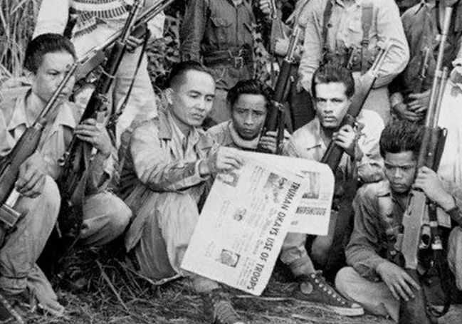

LIFE UNDER JAPANESE RULE
By Jervie Martin Akia
“Manila – 1942”

The city I once knew was transformed overnight. In January 1942, Japanese forces captured Manila after weeks
of fierce fighting, marking the start of a harsh and oppressive occupation that would last over three years.
Streets once bustling with everyday life fell under a heavy silence, punctuated only by the footsteps of Japanese
soldiers patrolling with grim resolve.
The Japanese established a military government, imposing strict control over all aspects of life. Food and
essential goods became scarce as wartime shortages worsened; rationing was implemented, but many struggled
to survive on meager portions. Inflation soared, and black markets thrived in shadowy corners.
Curfews were strictly enforced, and all communication such as radio broadcasts, newspapers, even letters were heavily
censored or used as propaganda tools. Schools taught Japanese language and culture, attempting to reshape
Filipino minds, though many resisted these efforts quietly.
Fear and suspicion filled the air. The Kempeitai, the feared Japanese military police, hunted suspected resistance
members and dissenters, often with brutal reprisals. Yet despite the oppression, the Filipino spirit endured.
Families shared scarce resources, neighbors supported one another, and underground movements circulated clandestine
newsletters filled with messages of hope and defiance.
Life under Japanese rule was a test of endurance and resilience which was a dark chapter marked by hardship but also by
quiet courage and an unyielding will to survive and reclaim the nation’s freedom.
THE GUERILLA MOVEMENTS
By Jervie Martin Akia
“Mountain Hideouts and Countryside – 1942 to 1945”

Beyond the cities, a different war was being waged. After the fall of Manila, thousands of Filipino
men and women escaped to the rugged countryside, joining guerrilla forces determined to resist the
Japanese occupiers.
Organized under various commands, some linked to the Philippine Commonwealth Army, others to local groups,
the guerrillas operated in the dense jungles, mountainous terrain, and remote villages of Luzon, Visayas,
and Mindanao. Their weaponry was often scarce and improvised; they used bolo knives, homemade bombs, and
captured firearms to strike swiftly and disappear into the wilderness.
I traveled through some of these hidden camps, witnessing the resilience and resourcefulness of the fighters.
They gathered intelligence, disrupted Japanese supply lines, and coordinated with Allied forces, becoming
invaluable allies during the eventual liberation campaign.
The guerrilla movement was supported by local civilians who risked their lives to provide food, medicine,
and information. Though brutal reprisals by the Kempeitai and Japanese troops were common, the resistance
persisted, fueled by a deep love of country and the hope for eventual freedom.
LIBERATION OF THE PHILIPPINES
By Mark Hilton Dulnuan
“Manila and Beyond – 1944 to 1945”

The air was thick with anticipation and the distant roar of artillery as Allied forces launched the campaign
to liberate the Philippines in October 1944, led by General Douglas MacArthur fulfilling his famous promise,
“I shall return.”
The Battle of Leyte Gulf, one of the largest naval battles in history, opened the way for the liberation forces.
As American and Filipino troops landed on Leyte and later Luzon, fierce fighting erupted across the islands.
Manila became the epicenter of a brutal urban battle lasting from February to March 1945, leaving the city
devastated.
I walked through the ruins where once proud buildings stood, now reduced to rubble. Civilians suffered terribly
amidst the fighting and Japanese reprisals, including the infamous Manila Massacre, where thousands of innocent
lives were lost.
Yet amid the destruction, hope surged. Filipino guerrillas and Allied soldiers fought side by side, gradually
reclaiming towns and provinces. The liberation restored the Philippine Commonwealth government and set the stage
for full independence.
The cost was great, but the end of Japanese occupation marked the beginning of healing and rebuilding. The Filipino
people, scarred but unbroken, looked ahead to a future of freedom and sovereignty.